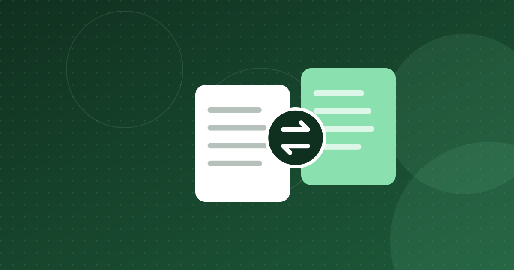

Expensya's Acquisition by Medius: A Tunisian Exit Story
Founded in Tunis in 2014, Expensya was acquired by Sweden's Medius in 2023. How the exit happened and what it means for Tunisian founders.

Key takeaways
- Medius announced its intent to buy Expensya on 7 June 2023 and completed the deal on 25 July 2023; the price was undisclosed but reported above $100 million.
- Expensya raised about $25.6 million in total, including a $20 million Series B in 2021 led by new investors MAIF Avenir and Silicon Badia.
- About 110 Tunisia-based employees reportedly shared roughly $10 million, and the founders went on to raise $9 million for Thunder Code.
- The exit relied on global B2B software, European customers and a Paris-based legal structure.
In 2023, Swedish software group Medius bought Expensya, an expense-management company founded in Tunisia in 2014. The price was not disclosed, but the press has reported it at more than $100 million. With InstaDeep's sale to BioNTech the same year, it became one of the two exits that changed how investors see Tunisian tech. Here is how it happened and what founders can learn from it.
Expensya before the Medius acquisition
Expensya was founded in 2014 by Karim Jouini and Jihed Othmani, two engineers who had worked at Microsoft. The product began as automated expense reporting: employees photograph receipts, and AI extracts the data so nobody has to type it in. It later grew into wider employee spend management, with web and mobile apps, payment cards and integrations with ERPs such as SAP, Oracle and Microsoft Dynamics.
The company was always built for international customers. As Jouini put it to Rest of World in 2023, Tunisia's market is very small, so any company would very quickly move internationally. France became its main market, while most engineering stayed in Tunis. TechCabal reported that in 2022, 110 of Expensya's 160 employees worked from its Tunis office.
Funding
- In April 2021 Expensya announced a $20 million Series B, with new investors MAIF Avenir and Silicon Badia and existing backers ISAI and Seventure Partners. It was the first investment from Silicon Badia's BIF2 fund.
- TechCabal put Expensya's total funding at $25.6 million before the acquisition. Launch Base Africa reported that the Series B valued the company at more than $50 million post-money.
- At the time of that round, Expensya had about 140 employees and said it had served more than 5,000 companies in roughly 100 countries.
The Medius deal: what was announced
- 7 June 2023: Medius, an accounts-payable automation company, announced its intent to acquire Expensya "for an undisclosed sum".
- 25 July 2023: Medius announced it had completed the acquisition.
At closing, Expensya reported more than 6,000 client companies, over 700,000 users in about 100 countries, about 200 employees from 20 nationalities, mainly in Tunisia, France and Germany, and recurring revenue that had more than doubled in two years. Medius said it had more than 4,000 customers in 102 countries and processed $180 billion in annual spend.
Why Medius bought it. Expensya added employee spend management and payment cards to Medius's invoice and procurement products, giving it coverage of a company's whole indirect spend. It also gave Medius a strong position in France, just as the French e-invoicing mandate (then scheduled for July 2024, since postponed) was approaching.
Price. It was never officially disclosed. TechCrunch said some sources put it at just over $120 million. Launch Base Africa reported a figure above $100 million. Treat these as press estimates.
What the exit meant for employees and investors
The deal stood out for how much money reached people in Tunisia. According to Launch Base Africa, 110 Tunisia-based employees shared about $10 million, two-thirds of it in cash. The same report said Jouini brought nearly 200 shareholders into agreement within six weeks of the announcement.
Some of that money went back into Tunisian tech. In January 2025, Jouini and Othmani announced they were leaving Expensya, which Medius was rebranding as Medius Expense. In June 2025 they announced Thunder Code, an AI software-testing startup headquartered in Paris with an office in Tunis. It raised a $9 million seed round from Silicon Badia, Janngo Capital, the ANAVA-backed Titan Seed Fund, angels including InstaDeep CEO Karim Beguir, and former Expensya employees, according to TechCrunch.
Lessons for Tunisian founders
1. Build for a global customer from day one
Expensya sold software to European companies. Its Tunisian base gave it access to strong engineers at a lower cost, but its revenue came from abroad.
2. Structure matters
Expensya was legally based in Paris, and InstaDeep in London, as Enterprise noted in 2026. Foreign holding companies make it easier to raise from European funds, issue employee equity and sell to a foreign buyer. Tunisian foreign-exchange rules, which the Startup Act eased only partly through special foreign-currency accounts, remain a real constraint (see the Startup Act).
3. Employee equity spreads the gains
The reported $10 million paid to Tunisian staff is the strongest argument for stock options. It also produced new angel investors.
4. Exits come from software, not from local volume
Like InstaDeep (see InstaDeep lessons), Expensya sold B2B software with recurring revenue to a strategic buyer. Local payments businesses face a smaller and more regulated market and are unlikely to repeat this path quickly.
Why it matters
Expensya shows that a company built largely by Tunisian engineers can be acquired for a reported nine-figure sum and that the proceeds can flow back into the local ecosystem. It also shows the conditions that made this possible: a European legal structure, European customers and foreign investors. For a broader view of who funds Tunisian startups today, see venture capital in Tunisia.
Companies in this article
Frequently asked questions
Who bought Expensya and when?
Swedish accounts-payable automation company Medius announced its intent to acquire Expensya on 7 June 2023 and completed the deal on 25 July 2023.
How much did Medius pay for Expensya?
The price was never officially disclosed. Press reports put it above $100 million, with TechCrunch citing sources at just over $120 million.
What did Expensya's founders do after the exit?
Karim Jouini and Jihed Othmani left in January 2025 and founded Thunder Code, an AI software-testing startup based in Paris with an office in Tunis, which raised a $9 million seed round in 2025.
Sources
- Medius announces intent to acquire Expensya — Expensya
- Media Alert: Medius completes acquisition of expense management firm Expensya — Medius
- Expensya raises $20 million — Wamda
- Expensya acquisition — TechCabal
- Expensya founders exit two years post-Medius deal, launch AI venture — Launch Base Africa
- One of Africa's most successful founders is back with a new AI startup and already raised $9M — TechCrunch
This article is for information only and is not legal, financial or investment advice. Figures are dated and sourced; check the latest official publications before making decisions.